UDN
Search public documentation:
UIEditorUserGuideCH
日本語訳
한국어
Interested in the Unreal Engine?
Visit the Unreal Technology site.
Looking for jobs and company info?
Check out the Epic games site.
Questions about support via UDN?
Contact the UDN Staff
한국어
Interested in the Unreal Engine?
Visit the Unreal Technology site.
Looking for jobs and company info?
Check out the Epic games site.
Questions about support via UDN?
Contact the UDN Staff
UE3主页 >用户界面& HUDs > UI编辑器用户指南
UI编辑器用户指南
已经不再支持该UI系统及其功能。请参照Scaleform GFx文档获得关于当前支持的用户界面系统的信息。
概述
打开UI编辑器
编辑器布局
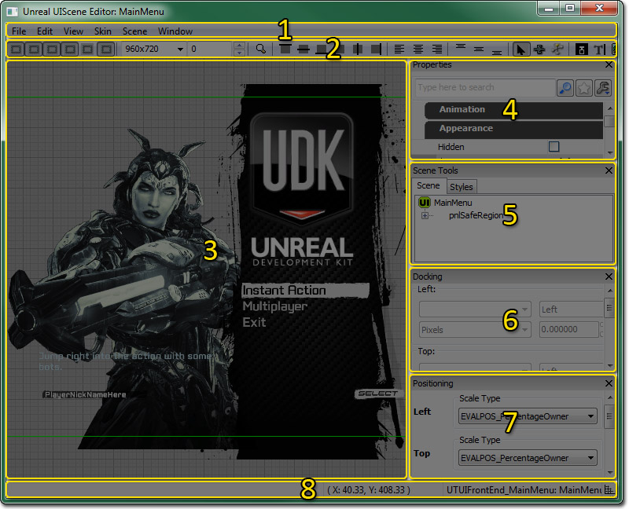
- 菜单条
- 工具条
- 预览面板 - 显示UI页面的预览效果，同时它是用于设置页面布局的画布。
- 属性面板 - 显示页面中当前选中的项的属性。
- 页面工具面板 - 包含了页面中的项目的属性层次结构视图和当前使用的皮肤的标签选卡。
- 停靠面板 - 允许编辑当前控件的停靠属性。
- 位置面板 - 允许编辑当前控件的位置属性。
- 状态条 - 显示了关于鼠标、页面等的信息。
菜单条
文件
Close(关闭) - 关闭页面编辑器。编辑
- Undo(取消) - 取消上一个完成动作。
- Redo(重复) – 执行上一次取消的操作。
- Cut(剪切) - 剪切选中的项，并将它们复制到剪切板。
- Copy(复制) – 把选中的项放到剪贴板上。
- Paste(粘帖) - 将剪贴板中的内容粘帖到页面中作为页面本身的子项。
- Paste As Child（粘帖为子项) - 将剪贴板中的内容粘帖到页面中作为当前选中控件的子项。
- Rename Selected Widgets(重命名选中控件) - 打开对话框来重命名选中控件。
- Delete Selected Widgets(删除选中的控件) - 从页面中删除选中的控件。
- Bind selected widgets to datastore(绑定选中的控件到数据库) - 绑定选中控件的选中的数据属性到数据仓库浏览器中当前选中的数据仓库内。如果没有选中数据仓库则禁用此项。
- Data Store Browser(数据仓库浏览器) - 打开数据仓库浏览器。
- Modify Default UI Event Alias Key Bindings(修改默认UI事件笔名按键绑定)... - 允许您通过Modify Default UI Event Alias Key Bindings(修改默认UI事件别名按键绑定) 对话框来修改默认按键绑定。
视图
- Reset View(重置视图) - 放置预览视图在预览面板中的位置，使得页面预览的左上角是视图的左上角。
- Center On Selected Widgets(居中选中的控件) - 将预览面板中的页面预览以当前选中的控件居中。
- Draw Background(描画背景) - 切换预览面板的背景图像的显示状态。
- Draw Grid(描画网格) - 切换预览面板中网格的显示状态。
- Draw Wireframe(描画线框) - 切换是否在预览面板中使用线框渲染3D网格物体。
- Viewport Outline(视图轮廓) - 显示一个蓝色的、单一像素的外围轮廓，代表预览面板中视图的维度。
- Container Outline(容器轮廓) - 显示一个绿色的、单一像素的轮廓，代表当考虑到了边槽在内后视口维度。
- Selection Outline(选中项的轮廓) - 在当前选中项的周围显示一个粗的、蓝色外围轮廓线。
- Combine Multi-Selection Outlines(组合多个选中项的外围轮廓) -
- Show Dock Handles(显示停靠手柄) - 显示当前选中项上的各种停靠位置的手柄。
- Draw Title Safe Regions(描画标题安全区域) - 切换控件应该位于的显示区域的显示状态，以确保将它们显示在适当的TV上。
皮肤
- Save Selected Skin(保存选中的皮肤) - 保存包含当前皮肤的包。
- Edit Selected Skin(编辑选中的皮肤) - 在皮肤编辑器 对话框中打开当前皮肤，以便在其中进行编辑。
- Load Existing Skin(加载现有皮肤) - 打开文件浏览器来加载包含皮肤的包。
- Create New Skin(创建新皮肤) - 打开创建新皮肤对话框来创建基于当前皮肤的新皮肤。
页面
- Refresh Scene(刷新页面) - 强制页面执行完全更新；重新构建停靠栈、决定控件位置、重新应用风格等。
窗口
- Properties(属性) - 切换属性面板的显示状态。
- Positioning(位置) - 切换位置面板的显示状态。
- Docking(停靠) - 切换停靠面板的显示状态。
- Scene Tools(页面工具) - 切换页面工具面板的显示状态。
工具条
| 图标 | 描述 |
|---|---|
| 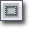 | 显示一个蓝色的、单像素的外围轮廓，代表预览面板中的视口维度。 |
| 显示一个绿色的、单一像素的轮廓，代表当考虑到了边槽在内后的视口维度。 | |
| 在当前选中项的周围显示一个粗的、蓝色外围轮廓线。 | |
| 显示用于调整当前选中项的大小的手柄。注意： 当手柄没有显示时也可以重新调整选中项的大小。 | |
| 显示当前选中项上的各种停靠位置的手柄。 | |
| 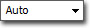 | 选择预览面板中要使用的视口维度。 |
| 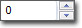 | 设置视口边槽的大小。这是个像素值，用作为视口周围的安全区域边界。 |
| 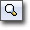 | 将当前选中项居中在预览面板中。 |
| 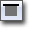 | 将选中项的顶部边缘和视口的顶部边缘对齐。 |
| 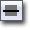 | 把选中物体的中心和它的垂直中心对齐。 |
| 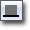 | 将选中物体的底边和视口的底边对齐。 |
| 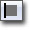 | 将选中物体的左边和视口的左边对齐。 |
| 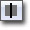 | 将选中物体的中心和它的水平坐标对齐。 |
| 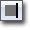 | 将选中物体的右边和视口的右边对齐。 |
| 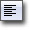 | 将选中项的文本左对齐。 |
| 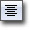 | 将选中项的文本居中对齐。 |
| 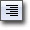 | 将当前选中项的文本右对齐。 |
| 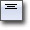 | 将当前选中想的文本向上对齐。 |
| 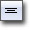 | 将当前选中项的文本居中对齐。 |
| 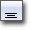 | 将当前选中想的文本向下对齐。 |
| 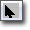 | 启用针对选中项目和平移项目的选择工具。 |
| 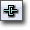 | 启用聚焦链工具的应用，以便确定页面中项目的聚焦顺序。同时显示选中项目的聚焦链手柄。 |
| 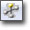 | 没有实现 |
| 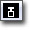 | 切用按钮控件创建工具。在预览面板中点击并拖拽将创建一个新的按钮控件。 |
| 启用编辑框创建工具。在预览面板中点击并拖拽将创建一个新的编辑按钮控件。 | |
| 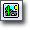 | 启用图像按钮创建工具。在预览面板中点击并拖拽将创建一个新的图像控件。 |
| 启用标签控件创建工具。在预览面板中点击并拖拽将创建一个新的标签控件。 | |
| 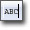 | 启用标签按钮控件创建工具。在预览面板中点击并拖拽将创建一个新的标签按钮控件。 |
| 启用Toggle Button(切换按钮)控件创建工具。在预览面板中点击并拖拽将创建一个新的切换按钮控件。 | |
| 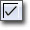 | 启用复选框控件创建工具。在预览面板中点击并拖拽将创建一个新的复选框控件。 |
| 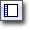 | 启用列表控件创建工具。在预览面板中点击并拖拽将创建一个新的列表控件。 |
| 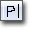 | 启用面板控件创建工具。在预览面板中点击并拖拽将创建一个新的面板控件。 |
| 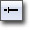 | 启用滑块控件创建工具。在预览面板中点击并拖拽将创建一个新的滑块 控件。 |
| 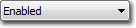 | 为当前选中项选择要在预览面板中预览的状态。如果没有选中任何项则禁用该项。 |
| 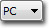 | 选择要预览面板中预览的平台。 |
| 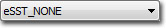 | 选择分屏布局模式。 |
预览面板
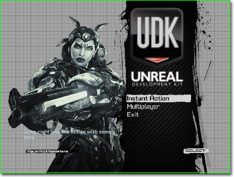
Preview Pane(预览面板)提供了页面的可视化效果和可视化地设置页面布局的功能。可以在预览面板中交互性地创建常用的控件，通过使用关联菜单可以轻松地放置所有控件。可以交互性地移动、旋转及缩放现有控件。其他方面的功能还包括设置停靠和聚焦链。属性面板
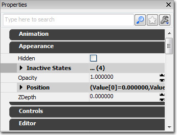
属性面板是标准的虚幻编辑器属性窗口，显示了针对空间的属性，比如当选中控件时的外观和声效，或者当没有选中任何控件时的针对页面的属性。页面工具面板
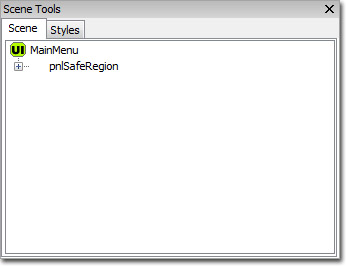
页面工具面板用于处理页面和皮肤中的元素。它包含两个标签选卡。页面
Scene（页面）标签由页面中的项目的层次结构树状图构成。UIScene本身是树结构的根节点，所有添加到页面的控件是该页面或其他现有控件的子节点。可以在该树结构中选中控件，并拖拽移动它们来修改它们的父项。右击控件，将会显示那个控件的 Context Menu(关联菜单)。页面关联菜单
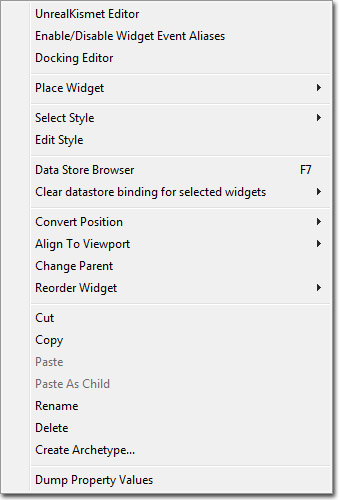
- UnrealKismet Editor(UnrealKismet 编辑器) - 打开当前选中项的UI Kismet编辑器。仅当选中一个单独的控件时可以使用该项。
- Enable/Disable Widget Event Aliases(启用/禁用 控件事件别名) - 打开Enabling and Disabling Input Event Aliases(启用和禁用输入事件别名)对话框。仅当选中一个单独的控件时可以使用该项。
- Docking Editor(停靠编辑器) - 打开停靠编辑器。
- Place Widget(放置控件) - 允许您放置现有任何类型的新控件，并不仅限于工具条中的常用类型。
- Place Archetype(放置原型) - 在内容浏览器中放置一个当前选中原型的实例。仅当选中原型时该项有用。
- Select Style(选择风格) - 允许您从加载的任何皮肤中选择一个新的风格应用到选中的控件上。仅当选中一个单独的控件时可以使用该项。
- Edit Style(编辑风格) - 打开 编辑风格对话框以便编辑应用到选中控件的风格。仅当选中一个单独的控件时可以使用该项。
- Data Store Browser(数据仓库浏览器) - 打开数据仓库浏览器。仅当先前没有打开数据仓库浏览器时显示该项。
- Bind selected widgets to datastore(绑定选中的控件到数据库) - 绑定选中控件的选中的数据属性到数据仓库浏览器中当前选中的数据仓库内。如果没有选中数据仓库则禁用此项。仅当打开数据仓库浏览器时显示该项。
- Clear datastore binding for selected widgets(清除选中控件的数据仓库绑定) - 清除选中控件的任何选中数据属性到任何数据仓库的绑定。
- Convert Position(转换位置) -改变控件在选中那侧所使用的位置调整方法。
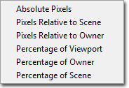
- Align To Viewport(对齐到视口) - 使用选中的对齐方式对其选中的控件。
- Change Parent(改变父项) - 打开改变父项对话框，从而允许您选择新的父项来将选中的控件(及它的所有小项)放置到其下面。请不要使用该操作处理处理原型实例中的项目。
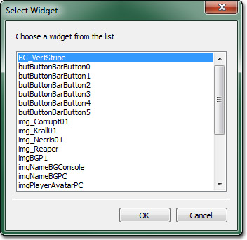
- Reorder Widget(重新排序控件) - 允许您通过向上、向下、移动到顶部、移动到底部等操作来在层次结构中重新排列控件的顺序(不会改变控件的父项)。如果选中了多个空间，结果将会很不直观。
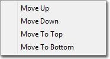
- Cut(剪切) - 剪切选中的控件，并将它们复制到剪切板。
- Copy(复制) – 把选中的控件放到剪贴板上。
- Paste(粘帖) - 将剪贴板上的选中项作为页面(树结构的根节点)的子项。
- Paste As Child(粘帖为子项) - 将剪贴板上的选中控件粘帖为当前选中控件的子项。
- Rename(重命名) - 允许您重命名选中的控件。
- Delete(删除) - 从页面中删除选中的控件。
- Create Archetype(创建原型) - 从具有给定包、组及名的选中控件创建一个新的原型，并使用该新原型替换掉选中的控件。
- Dump Property Values(转存属性值) - 输出选中控件的属性到日志文件中。
风格
风格标签允许您修改当前UI页面的皮肤、加载现有皮肤、创建新皮肤及显示当前选中的皮肤中包含的所有风格。右击一个风格，将会显示那个风格的 Context Menu(关联菜单)。风格关联菜单
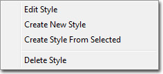
- Edit Style(编辑风格) - 打开 编辑风格对话框以便编辑选中的风格。
- Create New Skin(创建新皮肤) - 打开创建新皮肤对话框来创建基于当前皮肤的新皮肤。
- Create Style From Selected(从选中的风格创建风格) - 使用选中风格作为新风格的模板，并打开Create New Style(创建新风格)对话框。
- Delete Style(删除风格) - 当从前皮肤删除选中的风格。
停靠面板
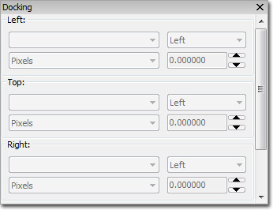
如果您不想在预览面板中交互性地处理控件之间的停靠关系，那么可以使用停靠面板来处理。关于停靠及使用停靠编辑器的更多信息，请参照 停靠 部分。位置面板
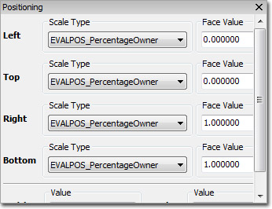
位置面板用于修改当前选中的控件的位置、缩放类型、及大小。关于使用这个面板中的控制的信息，请参照位置和缩放部分。态条
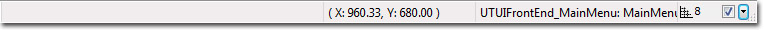
状态条显示了各种信息，比如鼠标在预览面板中的当前位置、当前选中的项、及菜单项的工具提示信息。控制
鼠标控制
键盘控制
| Ctrl+Up | 重新排序控件(在页面工具面板的页面标签选择) |
| Ctrl+Down | 重新排序控件(在页面工具面板的页面标签选择) |
热键
术语
当创建一个风格时，它被分配一个永久STYLE_ID。特定控件的所有风格都存储在一个单独的虚幻包文件中。这个包的根对象是UISkin对象。这个风格所需要的资源也存储在皮肤文件中，或者它也可以放置在其它包中。
一个游戏UI至少需要有一个UISkin包，它用做为默认皮肤。一次仅能激活一个UISkin，所有的自定义UISkins都是基于默认UISkin的。自定义UISkin可以通过创建一个和要被替换的皮肤具有相同STYLE_ID的新风格来完全地覆盖这个风格，然后把那个皮肤放置到那个STYLE_ID下的StyleLookupTable中。任何没有在自定义UISkin中进行特定覆盖的风格都将继承默认的皮肤。
默认情况下，控件将会自动地映射到自定义的UISkin中包含的自定义版本的UIStyle，但是用户可以选择为特定控件分配一个完全不同的风格。这仅改变那个皮肤集合以及任何基于那个自定义UISkin的任何UISKin中的那个控件的风格。自定义UISkin可以有继承关系，因此自定义UISkins可以基于其它的自定义UISkins。 Data Store(数据仓库) 数据仓库是指在游戏中UI是如何引用数据的。数据仓库允许UI以一种安全的方式引用游戏资源，因为它们囊括了生命周期管理。一个数据仓库可以或者是持久的，在这种情况下它被直接附加到UI交互的物体上并且可以供给所有的控件使用；或者它可以是临时的，在这种情况下，它被附加到当前的页面，并且仅那个页面包含的控件可以访问。持久数据仓库可能会跟踪所有游戏类型或者人物的信息，比如UI数据。临时数据仓库可能会跟踪类似于输入到某个UI值控件中的名称的东西。数据仓库可以提供静态信息，比如所有游戏类型的名称，也可以提供动态信息，比如当前游戏类型的名称。 Bound Navigation(边界导航) 边界导航是指在没有连接到页面的焦点链上的控件进行导航。当输入端绑定到NextControl(下一个控件)和PreviousControl(上一个控件)、Input Event Aliases(输入事件别名)时便会出现边界导航。 Unbound Navigation（非边界导航） 非边界导航是指在没有遵循scene(页面) Focus Chain(焦点链)定义的行为的控件间进行导航。当输入端绑定到NavFocusLeft(导航焦点左移)、NavFocusRight(导航焦点右移)、NavFocusUp(导航焦点上移)及NavFocusDown(导航焦点下移)、Input Event Aliases(输入事件别名)时便会出现非边界导航。
创建页面

创建控件
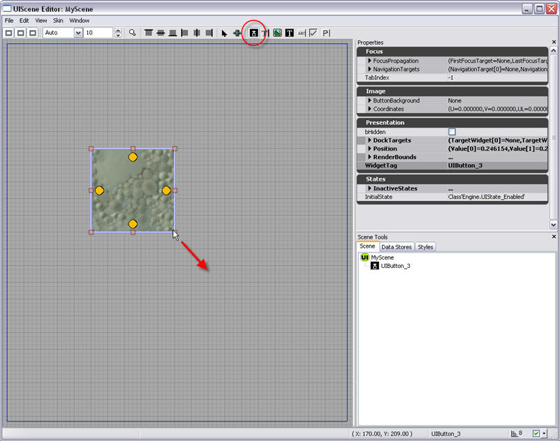
移动控件
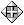
) 并且控件的外边缘将会改变颜色。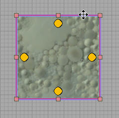
调整控件的大小
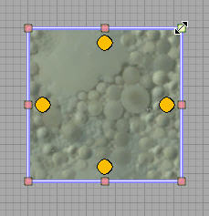
高级控件编辑
位置及缩放
在位置编辑器中可以对控件的位置及缩放比例进行微调控制。位置编辑器提供了通过数值来独立地调整控件的四个面或整个页面的位置的功能。页面或控件的宽度和高度也可以通过位置编辑器进行调整，以像素为单位。 值得注意的是，页面和它的控件之间或者控件和它的子控件之间的关系可能会导致位置及缩放比例的改变的传递。在一个例子中，一个控件有一个子控件，调整父控件的其中一个面的位置将不仅会导致在面移动的方向上缩放控件， 同时也会导致以同样的比率在同样的方向上缩放它的子控件。控件和页面的关系也是一样的，即在给定页面中的所有控件都是那个页面的子项。
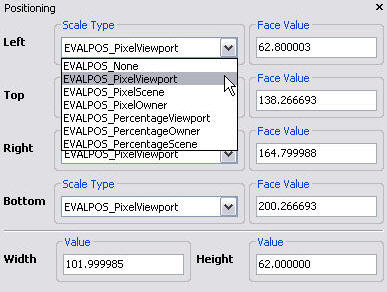
选中的页面或者控件的面的数值表现可以通过六种不同的方式进行插值，插值方式可以在每个面的Scale Type(缩放类型)标题下提供的下拉列表中进行选择。这六种表现实施上是对三种主要表现进行插值的结果，即根据像素和百分比对视口、页面和对象进行插值。提供像素和百分比两种表示方法，从而提供了选项来根据各种情况的需要来维持有限的像素偏移或者基于比率的相对百分比。选择这些缩放类型中的任何一个都将会重新定义列在相应面的Face Value(面值)标题下面的值。有以下缩放类型：- PixelViewport(像素视口) - 使用这种缩放类型时，值等于相对于视口左上角的视口原点(0,0)处的给定面的绝对像素值。视口框架定义了视口区域的宽度，并且它在页面视口显示为蓝色的长方形。
- PixelScene(像素页面) - 使用这种缩放类型时，顶部和左侧的面的值等于相对于页面左上角的页面原点(0,0)的特定面的绝对像素值。右侧和底部面的值等于从它们相反的面到它们的像素距离，这个距离和控件的宽度和高度相等。页面框架定义了页面区域的宽度，并且它在页面视口显示为绿色的长方形。默认情况下，一个页面的框架和视口框架的尺寸是一样的，因此页面框架可能会被视口框的蓝色长方形所覆盖。
- PixelOwner(像素拥有者) - 使用这种类型时，顶部和左侧面的面值等于相对于它的父项的左上角的控件给定面的绝对像素值。右侧和底部面的值等于从它们相反的面到它们的像素距离，这个距离和控件的宽度和高度相等。如果选定的控件没有父项控件，那么它的父项将是页面，在这种情况下这种缩放类型的面值和PixelScene(像素页面)类型相等。
- PercentageViewport（百分比视口） - 使用这种缩放类型的面的值是特定面从视口左上角的绝对像素偏移量和相应视口的宽度和高度相除得出的值。比如，控件左侧面的值为0，那么控件左侧的面将精确地和视口左侧的面对齐。在同样的情境下，值为1将会使控件的左侧面精确地和视口的右侧面对齐，因为当值为1时，左侧面的偏移量是视口的整个宽度。
- PercentageScene(百分比页面) - 使用这种缩放类型的面的值是特定面从页面左上角的绝对像素偏移量和相应页面的宽度和高度相除得出的值。比如，控件左侧面的值为0，那么控件左侧的面将精确地和页面左侧的面对齐。在同样的情境下，值为1将会使控件的左侧面精确地和页面的右侧面对齐，因为当值为1时，左侧面的偏移量是页面的整个宽度。
- PercentageOwner(百分比拥有者) - 使用这种缩放类型的面的值是特定面从它父项左上角的绝对像素偏移量和其相应父项的宽度和高度相除得出的值。比如，当一个控件是另一个控件的子项，控件左侧面的值为0，那么控件左侧的面将精确地和它父项的左侧面对齐。在同样的情境下，值为1将会使控件的左侧面精确地和其父项的右侧面对齐，因为当值为1时，左侧面的偏移量是它父项的宽度。
停靠状态
页面中的同控件可以相互地 停靠 在彼此上。术语‘停靠’用于描述两个或多个控件间的关系。对于两个控件的情况，如果控件1的一个边背停靠在控件2的一个边上，那么任何对控件2的停靠边位置的改变都将会传播到控件1的停靠边上。通过以下例子可以最好地解释这种关系。 设置停靠关系需要页面中有至少两个或多控件并且要选中选择工具 ( ) ，该选择工具在UIScene编辑器窗口的上部的按钮面板上。一旦选择了放置在页面中的一个控件，那么自每个边的中心将会出现4个圆圈。每个圆圈都是它所靠近的边上的停靠手柄。通过点击并拖拽这些手柄其中的一个，将会在这个手柄和鼠标指针之间描画一个链接。这链接可以被拖拽到页面中的另一个控件上，这将会触发这个第二个控件的停靠手柄进行描画。拖拽链接到第二个控件的停靠手柄并释放鼠标，这将将会停靠这些控件的两个边。 现在当在一个方向上拖动第二个空间的停靠边时，第一个控件的停靠边也会移动相应的量。 第一个控件停靠边位置和第二个控件的停靠边位置之间的间隔可以通过停靠编辑器进行修改。可以通过查看停靠面板访问停靠编辑器，也可以通过右击关系中的第一个控件并从关联菜单选择停靠编辑器或者邮寄停靠手柄并从关联菜单中选择 停靠编辑器 来访问。
第一个控件停靠边位置和第二个控件的停靠边位置之间的间隔可以通过停靠编辑器进行修改。可以通过查看停靠面板访问停靠编辑器，也可以通过右击关系中的第一个控件并从关联菜单选择停靠编辑器或者邮寄停靠手柄并从关联菜单中选择 停靠编辑器 来访问。
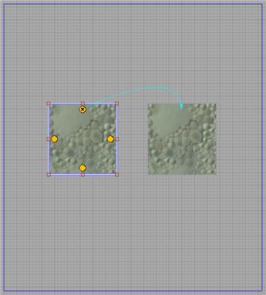
间隔值可以通过停靠编辑器指出的两个停靠边的位置间的间隔量来进行定义。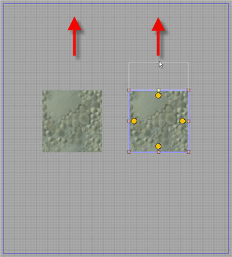
通过简单地右击停靠关系开始出的圆圈并选择Break Docking Link(断开停靠连接)便可以删除这个停靠关系。
风格
Styles(风格)控制一个控件如何显示。一种风格或许包含关于如何渲染贴图(缩放、拉伸等)的某些信息，它也可能包含关于描画字符串(字体、颜色、属性等)的一些信息。通过修改空间的风格，可以是空间的外观从一个状态变为另一个状态。不同的控件可能需要不同风格类型(目前有文本、图片及复选框)。用户可以创建一种风格然后把它们应用到场景中的很多控件上，是这些控件共享相同的属性。在一个容器中存在所有的风格成为一个Skin(皮肤)，它被保存为一个单独的包文件。对于完整的游戏UI来说，至少有一个Skin(皮肤)文件。您可以通过页面工具面板中的风格浏览器来添加、删除及编辑特定皮肤中的风格。风格层次
当创建一种新的风格时，您可以通过为它选择一个模版来基于现有的风格进行创建。新风格将会作为现有风格的子节点出现，它也将在现有风格和新风格之间创建一个专用的结合物。层次中的风格之间的关系和原型及原型实例间的关系非常相似。当基于现有风格创建一种新的风格时，现有风格将变为新的风格的一个原型。从现在开始，无论您修改父项风格的任何属性，如果那个属性没有在子项风格中进行覆盖，那么那个改变将会自动地传递到子项风格中，这和原型及原型实例的情况一样。状态上发生的传递过程根据状态的情况进行，意味着在父项风格中的Enabled(启用)状态上做的改变仅能传递到子项风格的Enabled(启用)状态中。创建新风格
要想在当前的皮肤中创建一种新风格，可以右击在风格浏览器中的一项，然后选择 Create New Style(创建新风格) 。然后将会弹出一个窗口要求您指定风格类型、唯一标签、名称以及模板。模板指出了您想基于哪个现有风格来创建新风格，同时它会把新风格做为现有风格的子项。 当您点击‘确定’后，新风格便会创建，并立即显示了风格编辑器窗口。
当您点击‘确定’后，新风格便会创建，并立即显示了风格编辑器窗口。
编辑风格
您可以通过风格编辑器来编辑风格。您可以通过几种方式来打开风格编辑器，第一种： 从分割浏览器中选择"Edit Style(编辑风格)或者右击控件并从控件的弹出菜单中选择 Edit Style（编辑风格） 。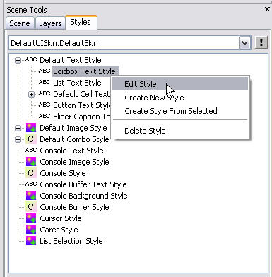
当创建新的风格时，风格编辑器窗口也会自动地弹出。这是一个风格编辑器窗口的例子，它解释了窗口的不同区域。这个编辑器显示了文本风格的属性，基于您正在编辑的不同的风格类型，风格编辑器看上去也是不同的。
| 1. | Common Properties(公有属性) | 包含着应用到所有风格类型的公有属性，也允许您 选择/编辑 风格的特定状态。如果状态旁边的单选框是没有选中，这意味着在这个风格中的这个状态的值将会从它的父项风格中的相同状态继承。所以如果您想覆盖这个状态的任何父项风格的属性，您必须勾选状态旁边的单选框。 |
| 2. | Custom Properties(自定义属性) | 显示了当前您正在编辑的风格类型的特定属性，文本风格和图片风格的自定义属性是不同的。 |
| 3. | Preview Window(预览窗口) | 显示了当前属性值如何影响控件的预览。 |
给控件分配风格
右击一个控件将出现弹出菜单， 然后选择 Select Style(选择风格) ，便会出现一系列的可用风格供您分配。当前分配给控件的风格附近有一个对勾。选择您想使用的风格，控件自身将会更新为新风格。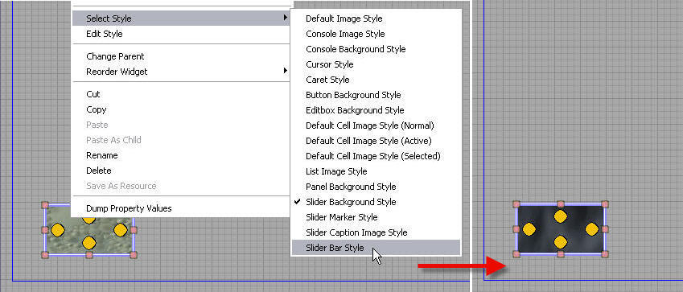
操作字体
您可以基于当前的屏幕高宽比和创建内容时使用的屏幕高宽比的不同来缩放字体。这个通过标签的风格ResolutionBased (在风格编辑器中称为 Resolution Scaled )的AutoScale(自动缩放)模式来完成。
皮肤
自定义皮肤
用户可以创建自定义皮肤，但是它们需要直接或者间接地基于默认的皮肤包来进行创建。除了添加、编辑及删除风格外，用户也可以覆盖或替换从默认皮肤包中继承的风格。当创建一种新自定义风格时，它不会直接地包含任何风格，但是它隐含地包含到父项皮肤风格的引用。您可以使用真正的风格的自定义版本来替换这些引用。如果您替换一个风格引用而不是创建新的风格，那么基础皮肤风格将会成为替换副本的原型，任何对原型的改变都将会传递到自定义皮肤中被替换的风格上。此外，在内部这两个皮肤将会具有相同的ID，这意味着您可以从默认皮肤改变到自定义皮肤，并且覆盖的风格将会自动地应用到在基础皮肤中使用原始风格版本的控件上。这允许您快速地在页面间改变皮肤，并且不需要手动地改变内部控件的风格。您或许仍然会选择为特定的控件分配一个完全不同的风格，但是这仅改变那个皮肤及基于那个自定义皮肤的控件的风格。自定义皮肤是可以有继承层次关系的，因为自定义皮肤集合中可以基于其它的自定义皮肤集合。在游戏中使用自定义皮肤
为了让引擎使用您的自定义皮肤，您需要在您游戏的DefaultUI.ini文件中添加以下几行：[Engine.UIInteraction] UISkinName="MyPackageName.MySkinName"
创建自定义皮肤集
要想基于现有皮肤创建一个自定义皮肤集，首先跳转到UI编辑器中的页面工具内的风格浏览器， 在显示当前皮肤名称的方框旁边是一个带有感叹号的按钮 ( ) 。点击这个按钮并选择 Create New Skin(创建新皮肤) 。 然后将会提示您输入以下信息： Package Name(包名称) - 将用于保存新皮肤的包的名称， Skin Name(皮肤名称) - 新的自定义皮肤的名称。 然后点击 OK(确定) 按钮，这样便创建了新的自定义皮肤。如果现在您选择使用新的皮肤，那么它将呈现为空白状态，但是因为它是基于另一个皮肤创建的，它隐含地包含着到基础皮肤风格的引用。这意味着您仍然可以应用和使用基础皮肤一样的风格到控件上。在这时您可以活着在自定义皮肤中创建新的风格或则会覆盖基础皮肤的风格。*注意* 如果您指定的包的名称不存在，编辑器将会为您创建一个包，除非您刷新通用浏览器视图，否则它或许不会自动地出现在视图中。在自定义皮肤集中覆盖基础风格
一旦您已经创建了一个自定义皮肤，您便可以继续覆盖它基础皮肤中的任何风格。为了实现这个目的，您必须在皮肤编辑器中打开您的自定义皮肤。跳转到虚幻编辑器中的内容浏览器，打开您用于保存自定义皮肤的包，使用鼠标左键双击自定义皮肤。 然后您应该可以看到皮肤浏览器窗口，在那里您可以查看皮肤的层次、在自定义皮肤中覆盖基础皮肤的风格、以及添加、编辑及删除自定义风格。
在风格标签下列出的风格列表可能包含着显示为 斜体字 的项。这意味着那个特定的风格没有真正地存在于这个自定义皮肤中，但是它存在于它的父项的皮肤中，而自定义皮肤隐含地包含了到它的引用。您可以通过右击显示为 斜体字 的项并选择 Replace Style Style Name In Current Skin(在当前皮肤中替换风格名称) 项来覆盖或替换这个引用。
当覆盖了该风格后，您将会注意到控件的字体不再是 斜体 而是显示为 粗体 。现在，自定义皮肤将包含它自己的风格的副本。
然后您应该可以看到皮肤浏览器窗口，在那里您可以查看皮肤的层次、在自定义皮肤中覆盖基础皮肤的风格、以及添加、编辑及删除自定义风格。
在风格标签下列出的风格列表可能包含着显示为 斜体字 的项。这意味着那个特定的风格没有真正地存在于这个自定义皮肤中，但是它存在于它的父项的皮肤中，而自定义皮肤隐含地包含了到它的引用。您可以通过右击显示为 斜体字 的项并选择 Replace Style Style Name In Current Skin(在当前皮肤中替换风格名称) 项来覆盖或替换这个引用。
当覆盖了该风格后，您将会注意到控件的字体不再是 斜体 而是显示为 粗体 。现在，自定义皮肤将包含它自己的风格的副本。
改变皮肤
要想改变在您的页面中使用的皮肤，首先请确保您皮肤所在的包已经在内容浏览器中进行了加载。然后跳转到位于页面工具面板的风格标签的下拉框并选择适当的皮肤。
数据仓库

| 1. | 1. Categories Viewport(种类视口) | 数据库种类视口显示了所有可用的数据库种类。 |
| 2. | 2. Tags Viewport(标签视口) | 数据库标签视口显示了选中的种类中存储的一些列单独的数据。 |

焦点链
 您或许会注意到，当使用Focus Chain Tool(聚焦链)工具 ( ) 选择一个控件后，在页面中的控件间的聚焦连接便已经被创建。这是因为无论何时在具有其它控件页面中放置一个控件，UI系统将会尝试自动根据控件页面中的原始放置位置来在新控件和它的周围控件之间产生聚焦连接。
您或许会注意到，当使用Focus Chain Tool(聚焦链)工具 ( ) 选择一个控件后，在页面中的控件间的聚焦连接便已经被创建。这是因为无论何时在具有其它控件页面中放置一个控件，UI系统将会尝试自动根据控件页面中的原始放置位置来在新控件和它的周围控件之间产生聚焦连接。
输入
打开修改默认键盘绑定
我们使用Bind UI Event Key Defaults(绑定UI键盘事件默认值)窗口来修改在控件设置的默认的键盘绑定。这个窗口可以通过选择页面编辑器的‘编辑’菜单下的Modifying Default Key Bindings(修改默认键盘绑定)或者进按下F8来进行访问。修改默认键盘绑定概述
使用绑定UI事件键盘(Bind UI Event Key)窗口功能可以把全局改变应用到有某种特定类型的所控件对用户输入的反应方式上。这意味着，如果我们改变按钮控件上Clicked(点击)、Input Event Aliases(输入事件别名)的键盘绑定，这个改变将会传递到我们包中的所有按钮控件上。一个单独控件的行为也可以通过在Binding Keys to Individual Widgets(绑定键盘到独立空间)中描述的方法进行改变。解释Bind UI Event Key Defaults(绑定UI事件键盘默认值)窗口提供的数据的过程最好通过一个例子来描述。让我们来看一下按钮控件的Clicked(点击)、Input Event Alias(输入事件别名)这个例子。 注意和这个Input Event Alias(输入事件别名)相关的有3个绑定键。让我们进一步深入地了解一下菜单的绑定键盘部分。
这里我们看到了一个关于绑定到Clicked(点击)、Input Event Alias(输入事件别名)的按键及当按下按键触发这个事件时按键所处状态的表格。表格中的第一栏是键盘的名称。其它栏是监听键盘押下事件的不同状态。在这个例子中，LeftMouseButton使用Active(激活)状态，意味着当按键押下事件发生触发Input Event Alias(输入事件别名)时鼠标光标需要悬停在按钮控件上。为了触发Clicked事件，回车键和空格键按钮控件必须是聚焦状态。
我们可以对我们需要的任何特定事件添加键盘绑定。我们也可以删除绑定，但是要记住这些改变是全局性的，针对您正在改变的类型的所有控件。
注意和这个Input Event Alias(输入事件别名)相关的有3个绑定键。让我们进一步深入地了解一下菜单的绑定键盘部分。
这里我们看到了一个关于绑定到Clicked(点击)、Input Event Alias(输入事件别名)的按键及当按下按键触发这个事件时按键所处状态的表格。表格中的第一栏是键盘的名称。其它栏是监听键盘押下事件的不同状态。在这个例子中，LeftMouseButton使用Active(激活)状态，意味着当按键押下事件发生触发Input Event Alias(输入事件别名)时鼠标光标需要悬停在按钮控件上。为了触发Clicked事件，回车键和空格键按钮控件必须是聚焦状态。
我们可以对我们需要的任何特定事件添加键盘绑定。我们也可以删除绑定，但是要记住这些改变是全局性的，针对您正在改变的类型的所有控件。
添加按键绑定到输入事件别名
要想添加键盘绑定到一个Input Event Alias(输入事件别名)中，首先要在绑定UI事件按键默认窗口的 Widget Class（控件类别） 中选择您想修改的控件类型。 然后，在 Supported Input Aliases(支持的输入别名) 列表中选择我们想对其添加按键绑定的输入事件别名。 点击 按钮将会显示 Select Input Key(选择输入按键) 对话框，该对话框列出了所有可用按键。 按下您想绑定到 输入事件别名的按键(这将时您在那个列表中选择的按键)，然后点击 按钮。*注意:* 如果您选择了已经绑定到另一个输入别名的按键，那么将会弹出一个针对这个问题的警告对话框。只要您使用不同的修改器集合，那么这是可以的。 当这步完成后，在绑定键盘表格中将出现那个新的键盘绑定，然后我们可以修改这个按键在进行处理时的状态。 您也可以通过选中要想从绑定按键表格中删除的按键绑定，右击显示关联菜单并选择 Unbind Input Key(取消绑定输入按键) 来删除按键绑定。 您可也可以通过从同样的关联菜单中选择 Bind New Input Key(绑定新的输入按键) 来修改现有的按键绑定。 注意 ： 请仔细检查您已经在UI输入别名对话框中为控件的输入别名实际分配的按键。这是不能为控件处理(通过ProcessInputKey)输入按键的最常见的原因。
启用和禁用输入事件别名
除了定义那个键绑定到哪个Input Event Aliases(输入事件别名)外，它也可以启用或禁用一个单独控件将要对哪个Input Event Aliases(输入事件别名)做出反应。编辑特定控件将要对其进行反映的Input Event Aliases(输入事件别名)可以通过使用Edit Widget Events(编辑控件事件)对话框来完成。可以通过在页面编辑器视口中右击控件并从出现的关联菜单中选择Enable/Disable Widget Events(启用/禁用控件事件)来打开这个对话框。在Edit Widgets Events(编辑控件事件)对话框中可以通过勾选或不勾选Input Event Aliases(输入事件别名)来启用或启用选中控件的事件别名。当Input Event Alias(输入事件别名)需要被改变时，在Modifying Default Key Bindings Overview (修改默认键盘绑定概述)部分所描述的Bind UI Event Key Defaults(绑定UI事件键盘默认值)窗口也可以从Edit Widget Events(编辑控件事件)对话框中打开。绑定键盘到单独的控件
前面我们已经学习了如何改变为给定类型的所有控件的Input Event Aliases(输入事件别名)的键盘绑定。这意味着如果您改变一个给定的Input Event Alias(输入事件别名)的键盘绑定，那么改变将会传递到那个特定类型的所有控件中。然而，更可能的情况是我们想改变特定控件的键盘绑定而不是给定类型的所有控件的键盘绑定。者可以通过使用Kismet Events(Kismet事件)来完成。为了针对这个主题，我们将仅讨论Kismet中关于输入的方面。要想获得UnrealUI中Kismet的更多信息请访问Kismet部分。 为访问给定控件的Kismet编辑器，可以在页面编辑器的页面视口中右击控件，然后从关联菜单中选择Kismet。一旦Kismet编辑器打开，您将需要选择和您想修改的键盘绑定所处的状态相符的序列。 一旦选择了一个序列，Sequence Editor(序列编辑器)将会显示一个State Input Event(状态输入事件)。这个Kismet事件作为仅针对特定控件在当前状态下的按键绑定编辑器。默认情况下会为控件的每个具有Kismet序列的状态创建一个State Input Event(状态输入事件)。通过Kismet事件我们可以为这个特定的控件添加我们的自定义绑定。这可以通过双击State Input Event(状态输入事件)来打开Bind Event Keys(绑定事件按键)窗口来完成。 在Bind Event Keys(绑定事件按键)窗口中有一个界面用于把按键绑定到这个控件的给定状态上，这和Default Key Bindings(默认按键绑定)的窗口中的绑定界面类似。值得注意的是在Bind Event Keys(绑定事件按键)窗口中的Availble Keys(可使用按键)提供了其它功能来绑定案件的按下、释放及重复点击，而不像页面编辑器中的Bind UI Event Key Defaults(绑定UI事件按键默认值)窗口那样仅有押下功能。为了添加一个按键绑定，我们需要从可用按键列表中选择一个按键然后点击
在Bind Event Keys(绑定事件按键)窗口中有一个界面用于把按键绑定到这个控件的给定状态上，这和Default Key Bindings(默认按键绑定)的窗口中的绑定界面类似。值得注意的是在Bind Event Keys(绑定事件按键)窗口中的Availble Keys(可使用按键)提供了其它功能来绑定案件的按下、释放及重复点击，而不像页面编辑器中的Bind UI Event Key Defaults(绑定UI事件按键默认值)窗口那样仅有押下功能。为了添加一个按键绑定，我们需要从可用按键列表中选择一个按键然后点击  按钮。
按钮。
 Bind Event Keys(绑定事件按键)窗口创建新的按键绑定后，将会在State Input Event(状态输入事件)上出现新的输出句柄。当押下这些输出句柄的特定按键时，它们便可以用于触发Kismet的行为。关于Kismet行为的解释可以通过在Kismet部分找到。
Bind Event Keys(绑定事件按键)窗口创建新的按键绑定后，将会在State Input Event(状态输入事件)上出现新的输出句柄。当押下这些输出句柄的特定按键时，它们便可以用于触发Kismet的行为。关于Kismet行为的解释可以通过在Kismet部分找到。
覆盖单独控件的默认绑定
使用在绑定控件到单独控件部分所描述的方法也可以重新绑定页面编辑器中的Bind UI Event Key Defaults(绑定UI事件按键默认值)窗口已经绑定过的单独控件。这意味着使用State Input Event(状态输入事件)提供的功能，不仅可以为一个单独的控件添加新的按键绑定，也可以重新定义这种类型的控件的任何默认按键绑定值。 无论何时默认绑定到Input Event Alias(输入事件别名)的按键通过Kismet State Input Event(Kismet状态输入事件)进行重新绑定时，关键字OVERRIDE(覆盖)将会出现在输入案件的输入句柄傍边，如下所示：
使用Sound Cues(声效)
配置
打开您的游戏的DefaultUI.ini文件，您将会在[Engine.UIInteraction] 部分看到一系列的UISoundCueNames。(如果您的游戏使用自定义的交互作用类，这个部分的名称可能会有所不同—但大多数游戏都是相通的。)那个列表定义了UI声效属性中可以使用的有效名称(就像UIButton的ClickedCue属性一样)。
皮肤
使用Kismet
打开Kismet编辑器
UI Kismet编辑器的打开可以通过右击页面窗口并从关联菜单中选择Kismet编辑器或通过右击页面工具面板的Scene(页面)标签中的UI页面图标( )并从关联菜单中选择Kismet编辑器来完成。Kismet概述
Kismet编辑器布局

- 1. Sequence Editor(序列编辑器) - 在序列浏览器中选择一个节点将会在编辑器图形视图中选中它。
- Properties(属性) - 当前在编辑器中选中的项的属性。
- Sequence Browser(序列浏览器) - 序列浏览器显示了在页面下的状态文件夹中的状态序列和树结构中的每个控件的名称。
使用序列
序列
UnrealUI Kismet中的序列的总体概念和UnrealKismet?是一样的。一个序列仍然是可以通过彼此交互来获得复杂行为的一个序列对象集合。然而构建子序列的复杂层次的能力已经改变。在UnrealUI中，子序列不是通过设计人员创建的，而是按照页面、控件和状态存在的。创建的每个空间和页面除了有一些和那个控件支持的给定状态相关的不定量的序列外，它们也固有地具有一个Global Sequence(全局序列)。全局序列中的序列对象将总是处于激活状态，但是状态序列中的序列对象仅当控件位于那个状态时才为激活状态。创建序列对象
序列对象是Kismet序列的基本构建块。各种对象所提供的功能提供了为页面和控件编写复杂脚本行为的能力。有四种类型的序列对象，包括Events(事件)、条件(Conditions)、动作(Actions)及变量(Variables)。这些对象在下面进行了详细说明。事件
这些对象为您的序列创建一个 input(输入) 来触发Conditions(条件)和Actions(动作)。它们以红色的棱形表示，在右侧有一个输出端，在底部可能有一个触发变量用于指出哪控件触发事件。事件可以通过从用户输入到页面或控件状态改变等多个不同的触发因素进行触发。一旦事件被触发，事件将会产生作为Actions(动作)或Conditions(条件)的输入。要获得当前可以使用的完整的事件列表请查看UI序列对象参考。Conditions(条件)
这些对象用于序列的流程控制。它们通过蓝色的长方形表示，左侧有一些输入端、右侧是输出端、相关的变量位于底部。条件主要是基于一些变量的状态来把输入端重定向到一个序列中的方法。关于当前可用的Conditions(条件)对象的完整列表请参照UI序列对象参考。动作
这些对象执行您页面中的控件或者页面本身的一些动作。它们通过粉色的长方形表示，左侧是输入端，右侧是输出端，底部是连接变量的地方。动作通常是把Event(事件) 或Action(动作)的输出作为它的输入进行出发的。要获得关于目前可用动作的完整列表请参照UI序列对象参考。
Variables(变量)
这些对象只是简单地存储一些特定类型的信息一共给Event(事件)、Action(动作) 或Condition(条件)使用。它们通过一个圆形表示，根据变量的类型不同圆形的颜色会不断变化。一个Variable Sequence Object(变量序列对象)存储的信息可以局部化地属于序列或者它可以属于Kismet序列外的全局数据(比如一个控件)。创建一个页面中控件相关的变量可以通过在页面编辑器中选择一个控件然后右击Kismet的序列编辑器或者右击序列浏览器汇总的给定序列来完成。这样用于创建任何序列对象的关联菜单将会出现，该关联菜单中有一个附加选项New Object Var Using "Widget Name"(使用“控件名称”新建对象变量)，这里的对像名称是指页面编辑器中的选中控件。创建序列对象
在给定序列中创建序列对象可以通过两种方式来完成。第一种方法需要在序列浏览器中选中要添加对象的序列。然后简单地右击序列编辑器并从关联菜单中选择想要的新对象。第二种方法是右击序列浏览器中的一个序列，并从关联菜单中选择一个新的对象。创建行为
在Kismet中创建一个有用的序列需要对创建序列对象之间的关系有基本的概括了解。可以放置在序列中的不同类型的对象都有一些特定的输入和输出句柄。可以在一个对象的输出和另一个对象的输入之间进行连接。这些输入和输出句柄通常根据连接它们的对象和它们要连接到的对象的不同有一些限制。有一些限制是隐含的，比如输入端仅接受到输出端的链接。其它的限制通过颜色编码进行显示，正如下面的例子所示，活动的UI State Action(UI状态动作)将仅修改由粉色表示的Object Variables(对象变量)。 以下的图片显示了一个Kismet行为的基本实例，它涉及到了一个作为影响变量的Action(动作)的输入的Event(事件)。在Scene Opened Event和Activate UI State动作之间创建链接，可以通过点击并拖拽Event(事件)的输入句柄到Action(动作)的输入句柄来实现。如果可以建立一个链接，那么当您释放鼠标时目的句柄将会改变颜色，从而创建了一个链接。对于Variables(变量)的情况，整个代表Variable变量的圆圈作为要连接的句柄。
序列对象参考
以下参考详细说明了仅针对Kismet的UnrealUI实现的Events(事件)、Conditions(条件)、Actions(动作)以及 Variables(变量)。关于其它Kismet序列对象的功能，请跳转到UnrealKismet?页面，也可以参考UnrealKismetReference页面。事件
UI
- Initialized(初始化) -当序列的拥有者被初始化时，触发这个事件。这个事件可以连接一个变量，产生一个输出。变量是一个被称为activator(激活剂)的对象变量。激活剂的行为在序列对象部分的事件描述中进行了解释。
- Enter State(进入时状态) -当序列的拥有者进入一个新的状态时触发这个事件。这个事件可以连接一个变量，产生一个输出。变量是一个被称为activator(激活剂)的对象变量。激活剂的行为在序列对象部分的事件描述中进行了解释。
- Leave State(离开时状态) -当序列拥有者离开它的当前状态时出发这个事件。这个事件可以连接一个变量，产生一个输出。变量是一个被称为activator(激活剂)的对象变量。激活剂的行为在序列对象部分的事件描述中进行了解释。
- Scene Opened(页面打开) -当前页面被打开时出发这个事件。这个事件可以连接一个变量，产生一个输出。变量是一个被称为activator(激活剂)的对象变量。激活剂的行为在序列对象部分的事件描述中进行了解释。
- Scene Closed(页面关闭) - 当前页面被打开时出发这个事件。这个事件可以连接一个变量，产生一个输出。变量是一个被称为activator(激活剂)的对象变量。激活剂的行为在序列对象部分的事件描述中进行了解释。
- On Click(点击) - 当序列拥有者收到为当前状态绑定的Clicked Input Event Alias(点击输入事件别名)时触发这个事件。这个事件可以连接一个变量，产生一个输出。变量是一个被称为activator(激活剂)的对象变量。激活剂的行为在序列对象部分的事件描述中进行了解释。
Conditions(条件)
UnrealUI Kismet函数中的所有条件和UnrealKismet?中的是一样的。请查看UnrealKismetReference(UnrealKismet参考)获得详情。动作
其它
- Console Command(控制台命令) -请查看UnrealKismetReference(UnrealKismet参考)获得详情。
UI
- Close Scene(关闭页面) - 这个动作用于关闭页面。这个动作有一个输入、一个输出和一个变量。变量是一个对象型变量，它指出了要关闭的页面。当执行完这个行为后，这个动作将根据动作执行是否成功提供一个或者Successful(成功) 或者Failed(失败)的输出。如果指定场景所处的情境使该场景不能被关闭，那么动作执行将会失败。
- Open Scene(打开页面) - 这个动作用于打开页面。这个动作有一个输入、一个输出和一个变量。变量是一个对象型变量，它指出了要打开的页面。当执行完这个行为后，这个动作将根据动作执行是否成功提供一个或者Successful(成功) 或者Failed(失败)的输出。如果指定场景所处的情境使该场景不能被打开，那么动作执行将会失败。
Variables(变量)
UnrealUI Kismet函数中的所有变量和Kismet?中的是一样的。请参照Kismet参考页面?获得详情。原型
字体
控件参考
控件输入事件别名
Widget Input Event Aliases(控件输入事件别名)是UI系统如何把特定平台的输入按键映射到平台独立的输入事件上的方法。输入事件可以被认为使一些行为，一般这些行为对于特定控件和UI系统的各种功能来说是必要的。这些输入事件对于任何平台来说都是共同的，无论平台是PC、Xbox360或PS3，所以Input Event Aliases(输入事件别名)是把共同的输入事件和特定平台的输入按键结合的一种方法。请不要把这些Input Event Aliases(输入事件别名)和Kismet事件相混淆。- Consume(消耗) - 任何与这个事件别名绑定的输入将会被删除，并且将不会触发它可能绑定的其它事件别名。输入也不会传递给页面中的其它空间。
- NextControl(下一个控件) - 和这个事件别名绑定的输入被称为"bound navigation(边界导航)"，因为它触发控件间的焦点变化，但是却不依附于焦点链。这个事件别名将会导致焦点被传递到页面控件列表中的下一个控件。
- PreviousControl(前一个控件 ) -和这个事件别名绑定的输入被称为"bound navigation(边界导航)"，因为它触发控件间的焦点变化，但是却不依附于焦点链。这个事件别名将会导致焦点被传递到页面控件列表中的前一个控件。
- NavFocusUp(导航焦点上移) -和这个事件别名绑定的输入被称为"unbound navigation(非边界导航)"，因为它根据焦点链触发控件间的焦点变化。假设链接存在，这个事件别名将会导致焦点被传递到连接到当前控件的顶部焦点链句柄的控件上。
- NavFocusDown(导航焦点下移) -和这个事件别名绑定的输入被称为"unbound navigation(非边界导航)"，因为它根据焦点链触发控件间的焦点变化。假设链接存在，这个事件别名将会导致焦点被传递到连接到当前控件的底部焦点链句柄的控件上。
- NavFocusLeft(导航焦点左移) - 和这个事件别名绑定的输入被称为"unbound navigation(非边界导航)"，因为它根据焦点链触发控件间的焦点变化。假设链接存在，这个事件别名将会导致焦点被传递到连接到当前控件的左侧焦点链句柄的控件上。
- NavFocusRight(导航焦点右移) -和这个事件别名绑定的输入被称为"unbound navigation(非边界导航)"，因为它根据焦点链触发控件间的焦点变化。假设链接存在，这个事件别名将会导致焦点被传递到连接到当前控件的右侧焦点链句柄的控件上。
- Clicked(点击) - 和这个事件别名绑定的输入将会产生Kismet 事件OnClicked，并把接收这个输入的控件转换为Pressed(押下)状态，如果控件支持那个状态。
- SubmitText(提交文本) - 和这个事件别名绑定的输入将会产生Kismet 事件Submit Text(提交文本)，并把接收这个输入的控件转换为Pressed(押下)状态。Submit Text(提交文本)Kismet事件包括一个参数，该参数包含着当输入时在控件的文本数组缓冲中存在的任何文本。这对支持文本缓冲的控件是适用的，比如Editbox(编辑框)。
- Char(清除) -和这个事件别名绑定的输入将会被添加到控件的文本入口缓冲中，输入的字符是输入按键对应的字符。字符将会被添加缓冲中的文本光标的位置。这对支持文本缓冲的控件是适用的，比如Editbox(编辑框)。注意为了使类似于编辑框的类可以正确地处理输入，需要把案件的"Character(字符)"添加到Char(字符)事件上。
- BackSpace(退格) -和这个事件别名绑定的输入将会从控件的文本缓冲中删除文本缓冲光标前面的字符。这对支持文本缓冲的控件是适用的，比如Editbox(编辑框)。
- DeleteCharacter(删除字符) -和这个事件别名绑定的输入将会从控件的文本缓冲中删除文本缓冲光标后面的字符。这对支持文本缓冲的控件是适用的，比如Editbox(编辑框)。
- MoveCursorLeft(光标左移) -和这个事件别名绑定的输入将会使文本缓冲光标在控件的文本缓冲中向左移动一个字符。这对支持文本缓冲的控件是适用的，比如Editbox(编辑框)。
- MoveCursorRight(光标右移) - 和这个事件别名绑定的输入将会使文本缓冲光标在控件的文本缓冲中向右移动一个字符。这对支持文本缓冲的控件是适用的，比如Editbox(编辑框)。
- MoveCursorToLineStart(移动光标到行首) - 和这个事件别名绑定的输入将会使文本缓冲光标移动到控件文本缓冲的当前行的开头处。这对于支持文本缓冲的控件是适用的，比如Editbox(编辑框)。这对支持文本缓冲的控件是适用的，比如Editbox(编辑框)。
- DragSlider(拖拽滑块) - 和这个事件别名绑定的输入将会通过增加或减小滑块控件的当前值从而使鼠标光标产生相对移动。
- IncrementSliderValue(增加滑块值) - 和这个事件别名绑定的输入将会通过使用在滑块属性中定义的微调值来增加滑块中控件的当前值。这个别名仅适用于滑块控件。
- DecrementSliderValue(减小滑块值) - 和这个事件别名绑定的输入将会通过使用在滑块属性中定义的微调值来减小滑块中控件的当前值。这个别名仅适用于滑块控件。这个别名仅适用于滑块控件。
- IncrementNumericValue(增加数值) -和这个事件别名绑定的输入将会通过使用在数值编辑框属性中定义的微调值来增加数值编辑框中控件的当前值。这个别名仅适用于数值编辑框控件。
- DecrementNumericValue(减小数值) -和这个事件别名绑定的输入将会通过使用在数值编辑框属性中定义的微调值来减小数值编辑框中控件的当前值。这个别名仅适用于数值编辑框控件。
控件状态
Widget State(控件状态是一种)控件可以进入的情形，它可能包括特定的用户输入设置、Kismet逻辑以及风格数据。以下列表概述了不同空间状态的默认行为，但是大多数处于特定控件状态的控件属性都是可以被修改的。- Active(激活 - 当鼠标放置到指定控件上时，控件将会进入到活动状态。
- Disabled(禁用) - 处于这个状态的控件不能通过焦点链系统或者NextControl(下一个控件) 和PreviousControl(上一个控件) 输入事件别名来使其处于聚焦状态。处于禁用状态的控件不能改变它自己的状态。处于禁用状态的一个控件的子项也将被设置为禁用状态。
- Enabled(启用) - 处于这个状态的控件可以通过焦点链系统或者NextControl(下一个控件) 和PreviousControl(上一个控件) 输入事件别名来使其处于聚焦状态。
- Focused*(聚焦) -当另一个控件通过通过焦点链系统或者NextControl(下一个控件) 和PreviousControl(上一个控件) 输入事件别名设置为聚焦时，控件将被置于这种状态。处于聚焦状态的控件可以接受用户输入。
- Pressed(按下) -当控件处于聚焦状态并且接收了绑定到输入事件别名 Clicked(点击)的用户输入时，控件将进入这种状态。
控件
- Button(按钮) - 按钮的主要功能是当它被点击或者被用户输入或者其它状态改变事件激活时，它便触发事件。这个控件可以通过它使用的风格或者通过精确地设置它属性的图片类别中的PanelBackground(面板背景)来显示贴图。
- Widget Input Event Aliases(控件输入事件别名) - Consume(消耗), NextControl(下一个控件), PreviousControl(上一个控件), NavFocusUp(导航焦点上移), NavFocusDown(导航焦点下移), NavFocusLeft(导航焦点左移), NavFocusRight(导航焦点右移), Clicked(点击).
- Widget States(控件状态) - Active(激活), Disabled(禁用), Enabled(启用), Focused(聚焦), Pressed(按下).
- Checkbox(选框) -这个控件的行为和按钮一样，除了它将根据用户的输入进入或走出按下状态，而不是当输入按键押下时，它不仅只是处于按下状态。这个控件可以通过选中它属性的Value(数值)类别下的bIsChecked属性来把它默认地设置为按下状态。这个控件可以它使用的风格或通过精确地设置它的属性的图片类别中的属性来显示贴图。
- Widget Input Event Aliases(控件输入事件别名) - Consume(消耗), NextControl(下一个控件), PreviousControl(上一个控件), NavFocusUp(导航焦点上移), NavFocusDown(导航焦点下移), NavFocusLeft(导航焦点左移), NavFocusRight(导航焦点右移), Clicked(点击).
- Widget States(控件状态) - Active(激活), Disabled(禁用), Enabled(启用), Focused(聚焦), Pressed(按下).

- Combo Box(组合框) - 这个控件由一个编辑框和一个列表组成。它发送两个事件： 一个是当它编辑框中的文本改变时，另一个是当它列表中的元素被选中时。Combo Box(组合框)的数据由它的列表进行处理 – 选择组合框的列表就像您绑定其它列表一样把它绑定到数据仓库。当然，编辑框也可以绑定到数据仓库中，编辑框的值通过组合框来管理，所以当列表被初始化或者选中一个选项时，任何从数据仓库中获取的值都将被覆盖。
- Editbox(编辑框) -这个控件的主要功能是作为键盘输入的文本域。一旦获得焦点，控件将会显示控件绑定中的字母数字键盘。这个控件允许的字符的数量可以通过设置它属性的Text(文本)类别下的MaxCharacters(最大字符)属性来改变。关于设置初始值以及使编辑器框处于启用状态或者只读状态的属性也可以在控件属性的Text(文本)类别下找到。可以接受的字符集也可以通过字符集属性来进行改变，从而限制输入的字符。
- Widget Input Event Aliases(控件输入事件别名) - Consume(消耗), NextControl(下一个控件), PreviousControl(上一个控件), NavFocusUp(导航焦点上移), NavFocusDown(导航焦点下移), NavFocusLeft(导航焦点左移), NavFocusRight(导航焦点右移), Clicked(点击).
- Widget States(控件状态) - Active(激活), Disabled(禁用), Enabled(启用), Focused(聚焦), Pressed(按下).

- Numeric Editbox(数值编辑框) -这个控件的主要用途是作为键盘输入的数值输入文本域。一旦控件获得焦点，它将显示在控件绑定内的数字键盘输入。它还包含两个按钮，用于增加和减少它的数值。数值编辑框具有编辑框控件的所有属性，同时还有附加的属性来指定要显示的小数位数、通过输入(微调)可以增加或减小值的数量、以及可以接受的最大及最小值。
- Widget Input Event Aliases(控件输入事件别名) - Consume(消耗), NextControl(下一个控件), PreviousControl(上一个控件), NavFocusUp(导航焦点上移), NavFocusDown(导航焦点下移), NavFocusLeft(导航焦点左移), NavFocusRight(导航焦点右移), Clicked(点击).
- Widget States(控件状态) - Active(激活), Disabled(禁用), Enabled(启用), Focused(聚焦), Pressed(按下).

- Image(图片) -这个控件是显示贴图的一个简单方法。这个控件显示的图片可以被绑定到风格编辑器中或者通过该控件属性的图片类别中的图片属性来设置。
- Widget Input Event Aliases(控件输入事件别名) - Consume(消耗), NextControl(下一个控件), PreviousControl(上一个控件), NavFocusUp(导航焦点上移), NavFocusDown(导航焦点下移), NavFocusLeft(导航焦点左移), NavFocusRight(导航焦点右移), Clicked(点击).
- Widget States(控件状态) - Active(激活), Disabled(禁用), Enabled(启用).
- Label(标签) - 这个控件是显示文本的一种简单方法。这个控件显示的文本可以绑定到数据库或者输入到它的Data Source(数据源)属性的Markup String(标记字符串)文本域，该文本列在它属性的Data(数据)类别下面。
- Widget Input Event Aliases(控件输入事件别名) - Consume(消耗), NextControl(下一个控件), PreviousControl(上一个控件), NavFocusUp(导航焦点上移), NavFocusDown(导航焦点下移), NavFocusLeft(导航焦点左移), NavFocusRight(导航焦点右移), Clicked(点击).
- Widget States(控件状态) - Active(激活), Enabled(启用),Disabled(禁用)。

- Label Button(标签按钮) - 这个控件的行为和按钮一样，同时具有标签的功能。
- Widget Input Event Aliases(控件输入事件别名) - Consume(消耗), NextControl(下一个控件), PreviousControl(上一个控件), NavFocusUp(导航焦点上移), NavFocusDown(导航焦点下移), NavFocusLeft(导航焦点左移), NavFocusRight(导航焦点右移), Clicked(点击).
- Widget States(控件状态) - Active(激活), Disabled(禁用), Enabled(启用), Focused(聚焦), Pressed(按下).
- List(列表) -这个控件用于显示数据的表格视图。列表仅当它被绑定到具有 Collection 或 ProviderCollection 类型(当您点击左侧面板的数据提供者时，文本域类型显示在数据仓库浏览器的右侧的面板中)的数据文本域时才有效。一旦列表控件绑定到了一个无效数据文本域，您可以通过关联菜单(当您右击控件时应该有一个 UIList 菜单项)来增加/插入/删除列。某些数据文本域仅支持一列，所以在 Add Column(添加列) 子菜单中只有一项，数据文本域将不能支持多列。
- Panel(面板) -这个控件的主要用途是作为其它空间的容器。然和其它控件都可以成为面板的一个子项，从而构成了一种关系，即面板的任何位置或者缩放改变都将会传递到它的子控件。
- Widget Input Event Aliases(控件输入事件别名) - Consume(消耗), NextControl(下一个控件), PreviousControl(上一个控件), NavFocusUp(导航焦点上移), NavFocusDown(导航焦点下移), NavFocusLeft(导航焦点左移), NavFocusRight(导航焦点右移), Clicked(点击).
- Widget States(控件状态) - Active(激活), Disabled(禁用), Enabled(启用), Focused(聚焦) 。
- Slider(滑块) -这个控件的设计提供了一个允许用户在一定范围内选择值的一个界面。这个控件在其属性的Slider(滑块)类别下列有一些属性。这些属性允许您自定义值范围的最大值、最小值及当前值。和微调值一样，滑块在它用户输入的值范围上的增加量也可以在属性中进行定义。
- Widget Input Event Aliases(控件输入事件别名) - Consume(消耗), NextControl(下一个控件), PreviousControl(上一个控件), NavFocusUp(导航焦点上移), NavFocusDown(导航焦点下移), NavFocusLeft(导航焦点左移), NavFocusRight(导航焦点右移), Clicked(点击).
- Widget States(控件状态) - Active(激活), Disabled(禁用), Enabled(启用), Focused(聚焦), Pressed(按下).
- UICalloutButton(UI调用按钮) 这个空间用于处理页面之间的导航及激活页面中的特殊功能。
- UICalloutButtonPanel(UI调用按钮面板) 这个控件是由一系列UICalloutButton控件构成的容器。
- UIFrameBox(UI框架) 是一个由9个图像组成的框，和tic-tac-toe(一字棋)板类似，允许它进行适当地缩放，但仍然维持它的角落的高宽比。
- UIMeshWidget(UI网格物体控件) 是如何在UIScene中附加剂使用3D图元的示例。
有用的控制台命令
toggledebuginput true 来启用它，然后按下CTRL-ALT-D来切换显示的信息，使用CTRL-F来切换显示的聚焦控件。